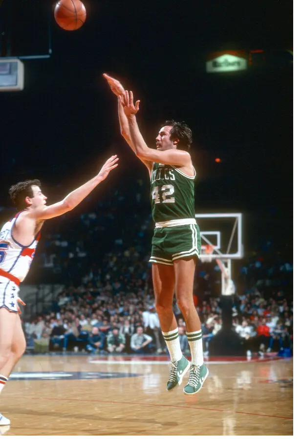
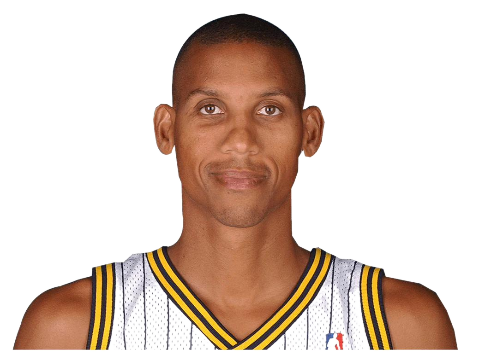
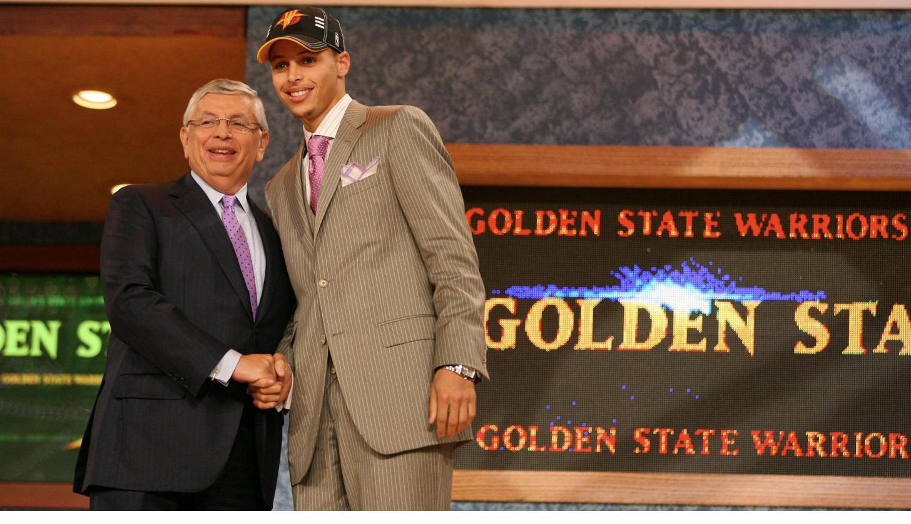
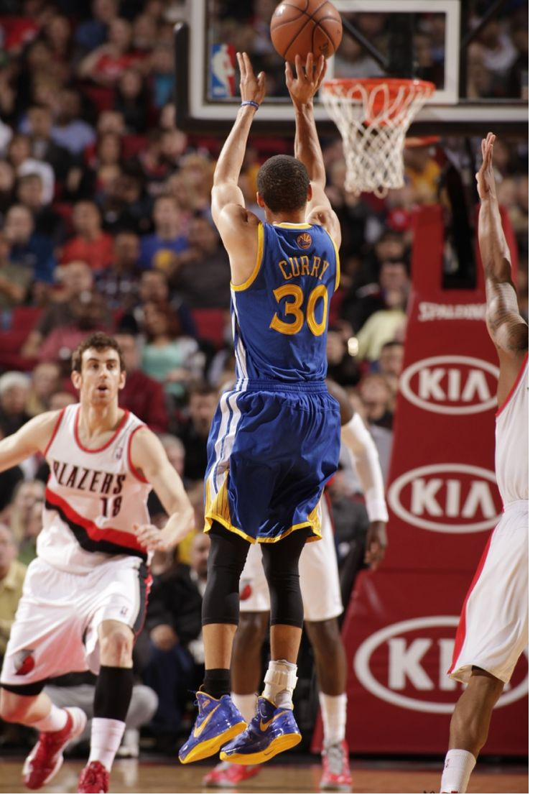
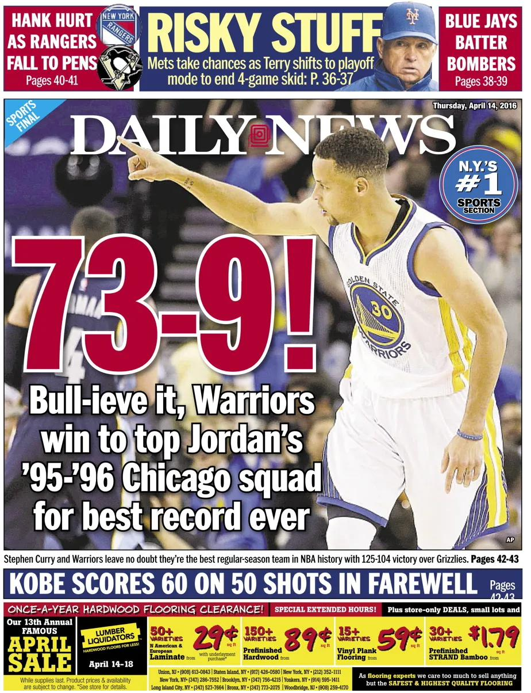

Cómo el triple reescribió el básquet
Noviembre de 1979. Chris Ford, escolta de los Boston Celtics, convierte el primer triple de la historia de la NBA. Nadie en el estadio lo festeja demasiado: es una curiosidad reglamentaria, un tiro que casi nadie se anima a intentar.
Cuarenta y cinco años después, la liga tira más de 35 triples por partido — casi trece veces más que en aquella primera temporada. Lo que empezó como un experimento al margen terminó reescribiendo por completo la forma en que se juega al básquet.
¿Cómo un tiro despreciado se convirtió en el arma más poderosa del deporte?


Reggie Miller
La regla no lo inventó, pero le dio más espacio para hacer lo que ya sabía hacer.
Junio de 2009 · Draft de la NBA
Golden State Warriors elige a Stephen Curry en el número 7 del draft. Viene de Davidson, una universidad chica fuera del radar habitual, y los informes de los scouts dudan de él: cuerpo frágil, poca explosividad, un base que tira demasiado para su posición.
Nadie en ese escenario sospecha que años después va a ser considerado el mejor tirador de la historia del básquet.

Lo que Curry hizo como individuo, la liga entera lo empezó a copiar — no en el promedio general de la liga, sino en cómo debuta cada generación nueva.

La temporada del primer récord: 272 triples.

Curry, además, primer MVP elegido por unanimidad.
No fue una temporada rara de un jugador suelto: fue la prueba de que un equipo entero podía construirse alrededor del triple.
Bulls
1995-96
Warriors
2015-16
Doce pívots, de 1969 a hoy, y cuántos triples intentaban por partido en promedio a lo largo de toda su carrera.
Brook Lopez
El true shooting % de la liga, temporada por temporada, desde 1979-80 hasta hoy.
Si podés tirar el triple, hacer una bandeja, y meter un libre— así resume Isiah Thomas, campeón con los Pistons, lo que hace falta para jugar en la NBA de hoy. El resto del juego, dice, se volvió decorado.
No me gustan los equipos que tiran de afuera, repite Charles Barkley hace años en la TV. Ni siquiera los pívots se salvan de la crítica — hoy Wembanyama tira más triples que dobles cerca del aro.
El triple no cambió las reglas del básquet. Cambió la pregunta que se hacen los que lo juegan: ya no es ¿puedo entrar?
, sino ¿desde dónde conviene tirar?
. Esa pregunta la empezó a responder una oficina de analistas, la llevó al extremo un base de 1,88 metros, y terminó reescribiendo hasta el rol de los pívots.
Cuarenta años después de aquel primer tiro casi ignorado, la única certeza es que la línea se va a seguir corriendo. La pregunta que queda es hacia dónde.